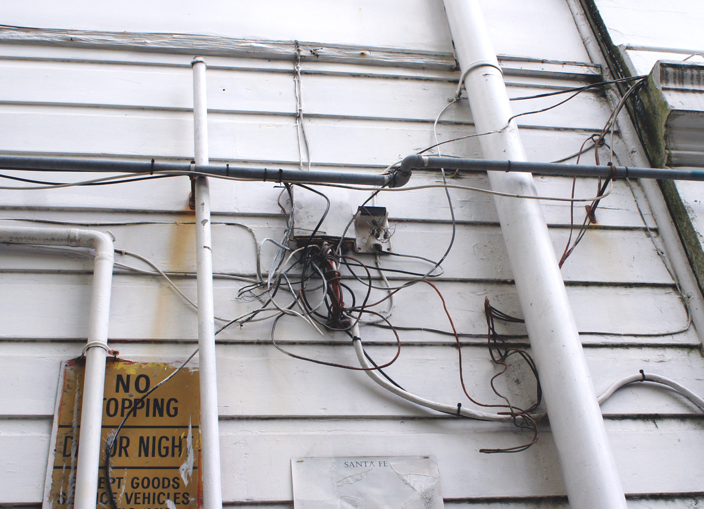

Internet Infrastructure

Metlink Real Time Board
These sign allows users to track and see how far away the bus is. The system uses GPS and cellular triangulation. Some also uses bluetooth at each stop or sensors in the road that is alerted with the built in sensors of the bus.
ATM
There are many ATM machines around Wellington city. ATMs are a data terminal. They connect and communicate through a host processor. The host processor is an Internet Serivce Provider. ATMs connect to the host processor through a phone line using a modem or through an Internet service provider using a local access number dialed by modem.

Traffic Lights
Traffic Lights are signalling devices that control traffic flow. The signals work by the traffic signal controller. Some controllers run on set timers and some run on detectors. The detectors detect when a car arrive which then determines the length of the light. Traffic light commonly have traffic cameras. These cameras connect to networks.

Cables
Cables are used on wired networks. Cables such as ethernet cables are used to connect devices together within a network like a router. Cables are commonly placed under the ground.
Surveillance Cameras
Many public spaces have cameras. These cameras send and receive data over a local area network and the internet.
Metlink Real Time Board
These sign allows users to track and see how far away the bus is. The system uses GPS and cellular triangulation. Some also uses bluetooth at each stop or sensors in the road that is alerted with the built in sensors of the bus.
ATM
There are many ATM machines around Wellington city. ATMs are a data terminal. They connect and communicate through a host processor. The host processor is an Internet Serivce Provider. ATMs connect to the host processor through a phone line using a modem or through an Internet service provider using a local access number dialed by modem.
Traffic Lights
Traffic Lights are signalling devices that control traffic flow. The signals work by the traffic signal controller. Some controllers run on set timers and some run on detectors. The detectors detect when a car arrive which then determines the length of the light. Traffic light commonly have traffic cameras. These cameras connect to networks.
Cables
Cables are used on wired networks. Cables such as ethernet cables are used to connect devices together within a network like a router. Cables are commonly placed under the ground.
Surveillance Cameras
Many public spaces have cameras. These cameras send and receive data over a local area network and the internet.

Private Camera
Private cameras connect to a larger network. Cameras are either connected to Wi- Fi or a fixed network cable. This router provides the channel that connect you the owner to their camera.
Free Wifi Zone
There are ten Free Wifi Zones in central Wellington. Free Wifi Zones allow Spark customers to have 1GB of free data a day.
Antennas
Modems can connect to your antenna. Antennas are an electrical device that converts electric power into radio waves. They radiate energy from the current as electromagnetic waves. The metal rods catches these waves and feed them into electronic devices such as wireless LAN, radio and TV.
Satellite Dish
Satellite Internet acess allows users to acess the internet through satellites. Satellites work similar to antennas though the signal is captured by the dish.
Cellphone
Many people use wireless networking also known as Wi-Fi. Wi-Fi devices such as the cellphone are able to connect to Wi-Fi using radio frequencies. They send signal between devices.
Modem Router
Modem Routers are very common in houses. They allows you to connect multiple wired and Wi- Fi devices to the internet. They maintain the connection with the Internet provider service.